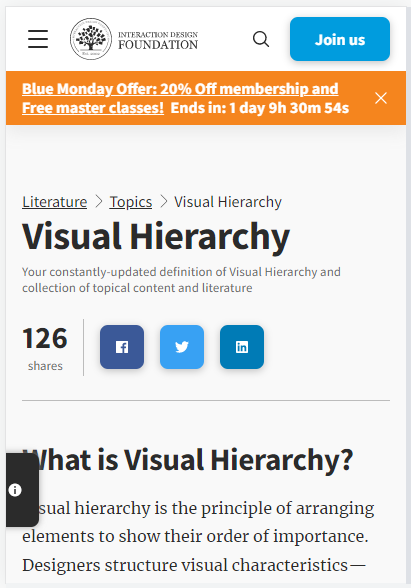
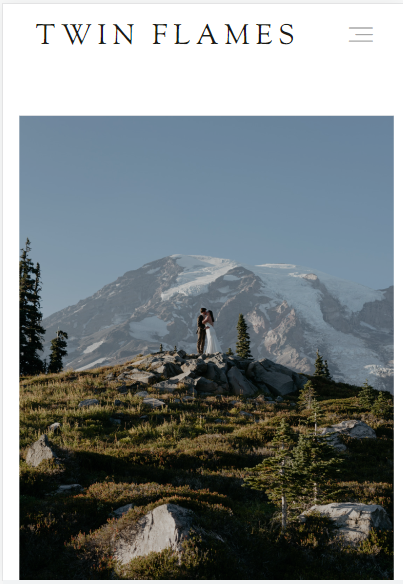
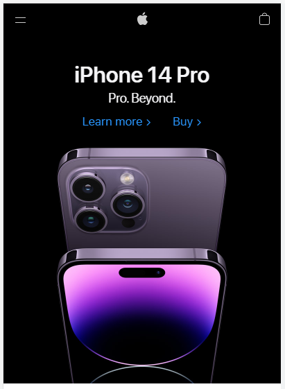

Visual Hierarchy
Interaction Design Foundation
https://www.interaction-design.org/ This site uses an effective visual hierarchy that helps them to achieve their main goals. They have essentially two highlighted call-to-action buttons, one to 'join us' and one to share this article on a selection of social media platforms. Next to the latter selection there is a large display of shares-to-date, which helps back up their emphasis on the sharing of their articles. Today the page also has a banner that directs the visitor's attention to a discount of their services, which is also effective in promoting engagement and investment.
Rule of Thirds
Twin Flames Photos
https://twinflamesphotofilm.com/ This website does and doesn't provide great examples for the rule of thirds. On the desktop version of the site they use a wonderful image with a foreground of mountains and a background of sky that take up 30 and 60 percent of the space, respectively. Unfortunately their mobile site doesn't use an image with the same nice ratio, which was an interesting and slightly disappointing design choice. Technically they could be considered to have used the rule of thirds if you consider the sky to be clear and the lower 2/3 of the image to be 'busy', but the color similarity between the sky background and the mountain background throws off the balance somewhat.
White Space and Clean Design
Apple
https://www.apple.com/ Whitespace is always used in apple marketing. They like their brand to feel fresh, clean, and new, which whitespace can help convey. Their modern vibe helps them to achieve their simple goal of letting their brand sell itself. On their website they don't bother to explain all the new features of the new phone, but rather a generic good-feeling statement that doesn't have any actual meaning right above the image of their newest product. This helps them to focus on the selling point without any distractions.